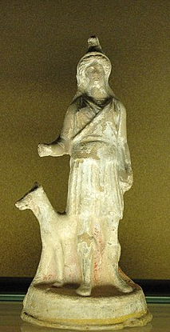
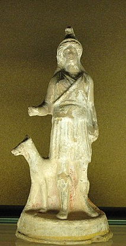
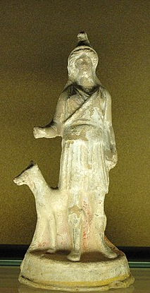
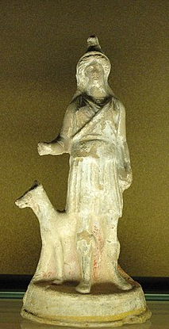
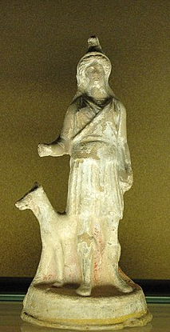

La Mythologie dace

La page principale
Le Panthéon Grec
Le Panthéon Romain
Le Panthéon Égyptien
Le Panthéon Nordique
Le Panthéon Mésopotamien
Le Panthéon Dace
Introduction
Coutumes et rituels
Dieux daces
Le symbolisme du loup
Le Panthéon Hindou
Le Panthéon Maya
Le Panthéon Inca
Le Panthéon Aztèque
Origines
Légende des soleils
Création des hommes
Création du cinquième soleil
L'aigle et le serpent
Conception de la mort
Divinités


 


